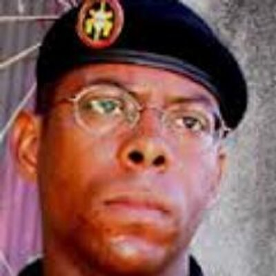

|  | André Mathias também conhecido por seu sobrenome, Mathias, é um personagem fictício dos filmes Tropa de Elite (2007) e Tropa de Elite 2: O Inimigo agora É Outro (2010), de José Padilha. Interpretado pelo ator André Ramiro, foi inicialmente planejado como protagonista. Mathias, assim como outros personagens e situações dos filmes, é baseado em elementos presentes nos livros Elite da Tropa e Elite da Tropa 2, de André Batista e Rodrigo Pimentel, em parceria com Luiz Eduardo Soares. No primeiro filme, Mathias ingressou, na condição de Aspirante, na Equipe Alfa do BOPE. No segundo filme, que se passa 13 anos após o primeiro, Mathias foi promovido a Capitão. |